| 1997年から2006年までのミーティング資料編 |
|---|
| 1997 | 1998 | 1999 | 2000 | 2001 | 2002 | 2003 | 2004 | 2005 | 2006 | 2007 | 2008 |

|
◎ JA1エリアで2006年暑気払いミーティング(30.Jul.2006) 異常気象で遅れている梅雨明けを前にした7月30日、JA7エリアからの参加者を加えた50MHzの有志10人が秋葉原の「矢まと」に集まり、 "2006年暑気払いミーティング"を開催した。 今年は6月初旬から始まった"マルチホップ"による異常伝搬で約2ヶ月に渡りヨーロッパの入感で賑わった後だけに、 話題はこのオープンでの"成果"の報告で盛り上がった。 サンスポットの最低期の伝搬とは思えない今回のヨーロッパの方面のコンデションも、 7月21日の短いオープンを最後に一段落し、 コンデションを気にする事もなくこの日の飲み会は二次会まで繰り出す盛況だった。 50MHzマンの"気になる話題"は「今回のコンデションが来年も再現されるのか？」に集約された。 早くも来年のオープンを見越して今から準備を始めようと張り切る参加者も...。 中東やヨーロッパの"Esマルチホップ"のオープンの話題等で大いに盛り上がった一夜だった。 |
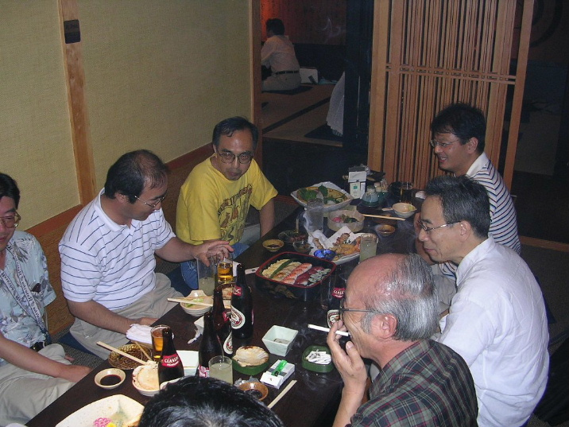
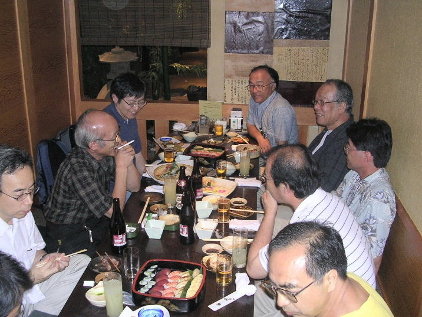
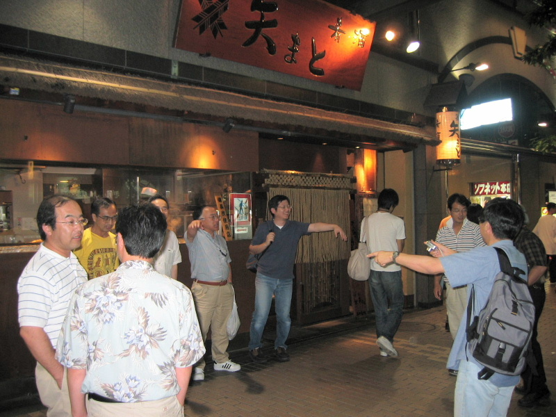
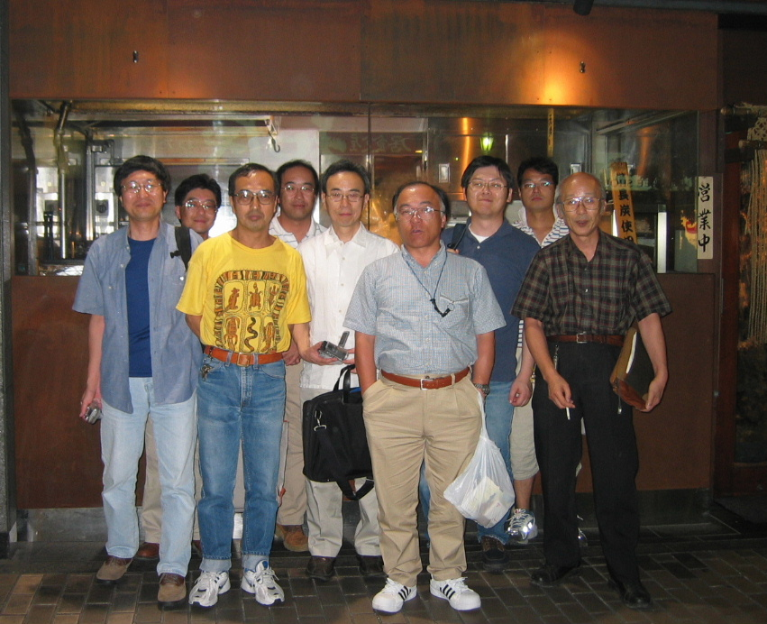
|
◎ 第35回東北6m SSB Group Meeting in 仙台(12.Jul.2006) 2006年の第35回東北6SGミーティング・仙台大会は去る7月08～09日の両日、宮城県仙台市若林区のウエルサンピア仙台で開催された。 今年は6月初旬からEsのマルチホップによるヨーロッパ方面の大オープンが続いていて、 当日の参加者の集まりが気になるコンデションだったが、当初の予定を超える38局(+1人)の参加者で賑わった。 会場に近い地元の局の中には、この日ヨーロッパとのQSOを済ませて会場に遅れて駆けつける局もいて、 遠来の参加者から"非難"されたり"羨まれ"たり...。 もしもミーティングの開催日が6月中だったらミーティングの開催が成り立たなかったのでは？との"冗談"も飛び出すほど。 8日の懇親会は予定通り午後6時から始まった。例年とは異なり懇親会は参加者全員の集合写真の撮影から始まった。 続く懇親会本番では幹事の挨拶の後、各局の自己紹介が行われた。 宴会が進むにつれて年に一度の再会に、此処かしこでラグチューの輪が出来ていた。 二次会は「DX組」と「国内移動組」の2つの部屋に分散して行われた。 会場の都合で時間制限があり深夜遅くまで"飲めなかった"心残りの局も...。 翌9日は午前9時から恒例のミーティングが始まった。最初の講演はJA1RJU(JA7JU)による「2005年からのコンデションの総括」と、 3月10-13日に行われたフィリピンからの「DZ1JP・50/144MHzのEME運用」が紹介された。 「2005年の総括...」では、この6月の異常とも思えるEsのマルチホップによるヨーロッパとのオープンの模様を記録した資料が紹介された。 フィリピンの特別局・DZ1JPの運用は、この秋に予定されているフィリピン・スプラトリーに向けての「テスト運用」のため行われたもので、 この時の現地での模様がスライドを使って紹介された。 続いて「国内移動と平成の大合併」と題して"移動運用のスペシャリスト"のJO1PSX・柴さんから国内移動運用のノウハウが資料を添えて詳細に報告された。 続いてJA7UQ・鹿間さんから「ソフトウェアラジオとグローバルアンテナサーバ」と題してコンピューターを使った"遠隔受信"の最新技術が紹介され興味を引いていた。 最後はJA7WSZ・浜名さんによる恒例の「ジャンク市」、続いて次期開催地の福島県代表(JA7WSZ)に宮城県の幹事(JA7MIT)から大会旗が引継がれ定刻の1200時に宮城(仙台)大会は無事終了した。
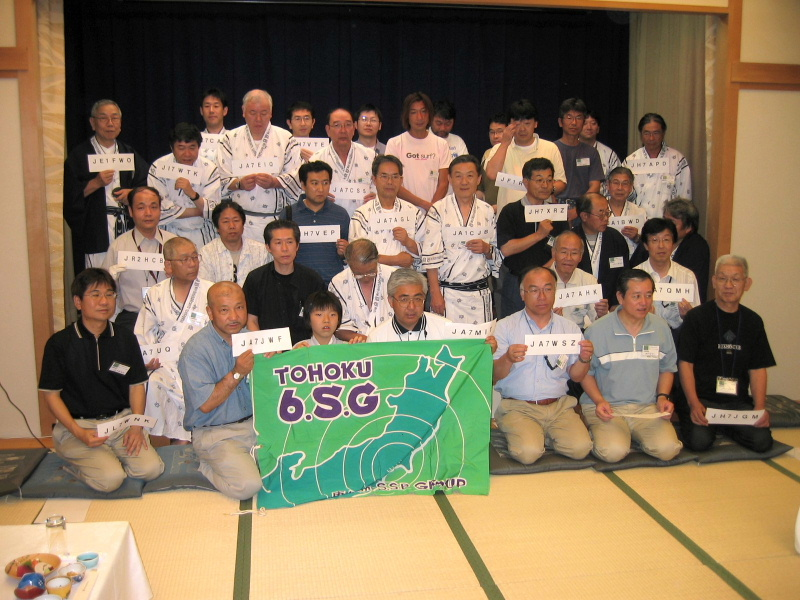 2006年 第35回東北6SG参加者
【 第35回東北6SG参加者 】
JA1BWD JI1NJC JA7AGL JA7QVI JH7JGM JI7WTK
JA1CJB JI1PND JA7AHK JA7WSZ JH7MQU JI7WNK
JA1DWQ JO1KBC JA7CSS JE7CAI JH7MSB JR7XGL
JA1RJU JO1PSX JA7EIQ JF7GDN JH7VEP JA1DWQ(お孫さん)
JE1FWO JP1MQZ JA7JWF JH7APD JH7VTE
JE1HWY JR2HCB JA7MIT JH7BRY JH7XRZ
JH1WHS JA7UQ JA7QMH JH7DHS JI7NAI
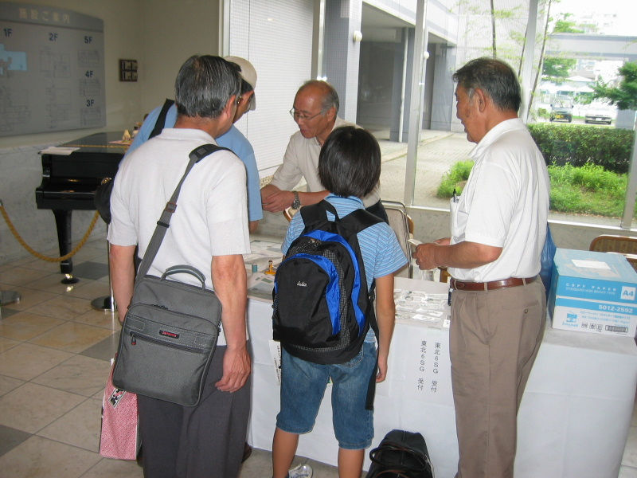 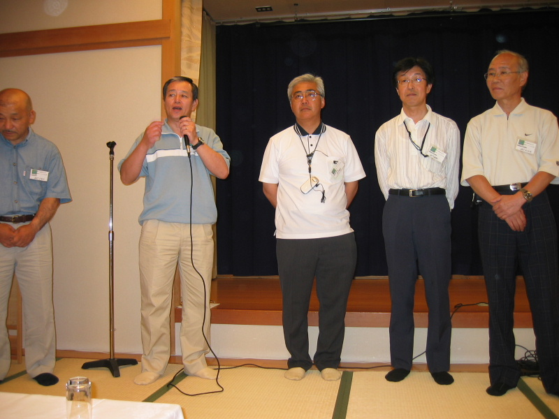 東北6SG・仙台大会の受付(左)/懇親会で挨拶する世話役の皆さん
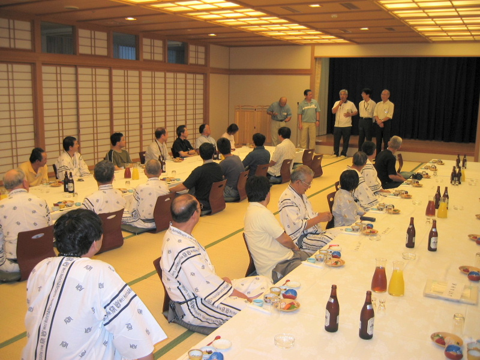 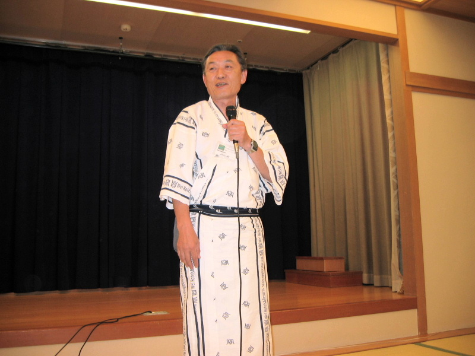 懇親会/約1ヶ月の北海道SSTV移動運用を成功させて参加されたJA1CJB・熊谷さん
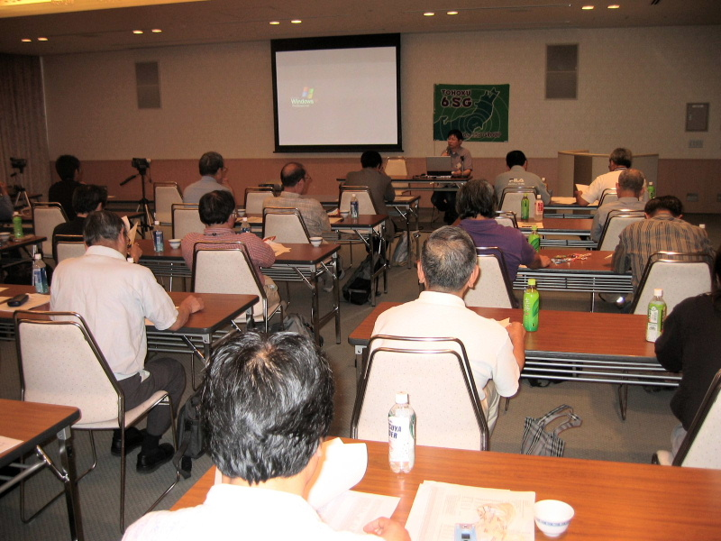 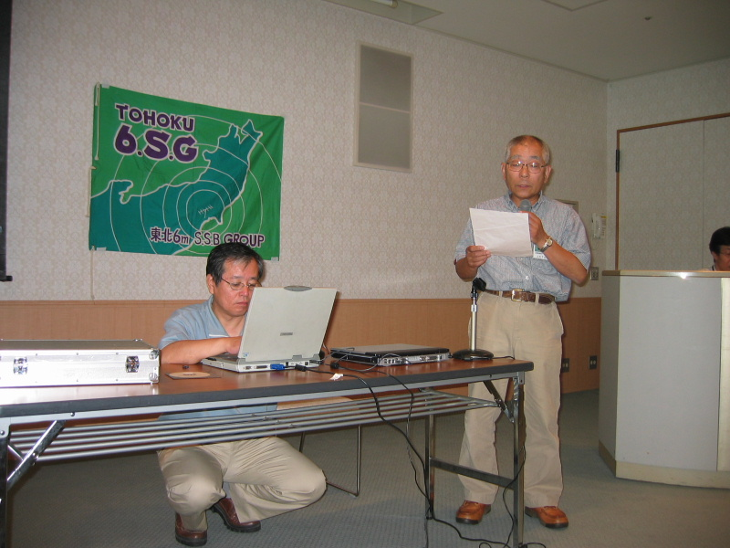 講演はJO1PSX・柴さんの「移動運用」(左)/JA7UQ・鹿間さんの「ソフトウェアラジオ」
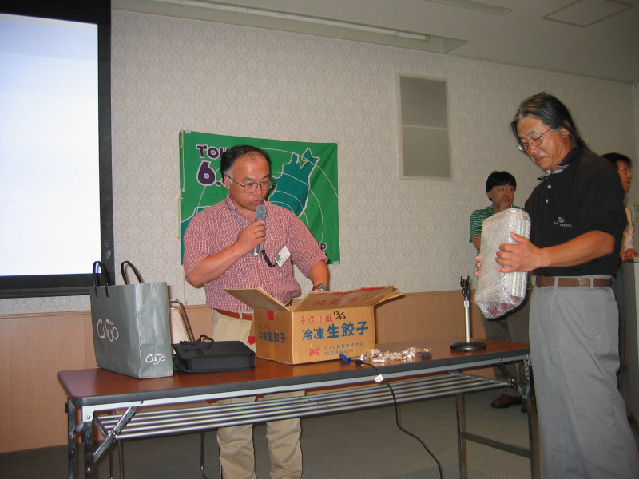 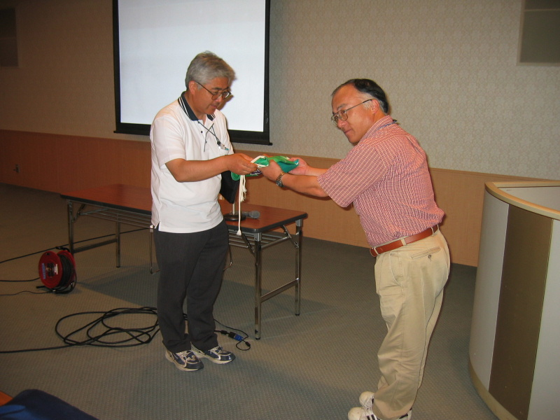 JA7WSZ・浜名さんによるジャンク市/6SGの大会旗は次期開催地の福島県に手渡された [宮城大会世話役] JA7MIT・JA7AHK・JA7QVI・JA7QMH・JA7JWF |
|
◎ 第35回東北6m SSB Group Meeting 東北6SG in 仙台のご案内(05.Apr.2006) 皆様の所では、豪雪の影響は如何でしたでしょうか みちのく仙台は、 これと言った影響はなかったと思います。 やっと寒さも緩みつつある今日この頃です。VK方面のシグナルもちらほら入感し、 春らしさも一層感じられるようになりました。 さて今年の東北6SGの開催時期が決定致しましたのでご案内致します。
○東北6SG in 仙台
開催日 開始日：平成18年7月8日(土) （受付開始 16:00～）
懇親会 18:00～ 二次会 21:00～
終了日：平成18年7月9日(日) ～12:00
講演 09:00～ オ－クション 11:00～ 終了12:00
会場名:ウエルサンピア仙台 住所:〒984-0037 仙台市若林区蒲町字東10番地
電話:022-282-7511 HPｱﾄﾞﾚｽ：http://www.kjp.or.jp/hp_60/
会費:15,000円（当日会場でお受取致します）
＊会場は厚生年金施設のため受給者の方は、証明書コピー持参をお願いします。
東北自動車道仙台南ICから仙台南部道路・仙台東部道路 (有料）― 仙台東IC－
サンピア仙台(所要時間約30分)
◆ 7月8日(土)当日の誘導については、50.300MHzを予定していますが状況によ
り変更あり。
申込み締切日:平成18年6月25日(日)まで
郵便、電話またはEメールでお願いします。
申込み先:仁和 隆司(JA7MIT)
申込住所:〒981-3202 仙台市泉区北高森7-11
連絡番号:090-2363-0584
Email:takashi.niwa@ttk-g.co.jp もしくは下記幹事にお願いします。
尚当日はジャンク市を企画していますので各局で手持ちのジャンク等がありま
したらお持ち寄りください。
*宿泊人数に制限ありますので、早めに申込み願います。
[幹事] 仁和 隆司(JA7MIT)・能登 功(JA7AHK)・平間 隆(JA7QVI)・佐竹 正行(JA7QMH)
小林 洋一(JA7JWF)
|
| 1997年から2006年までのミーティング資料編 |
|---|
| 1997 | 1998 | 1999 | 2000 | 2001 | 2002 | 2003 | 2004 | 2005 | 2006 | 2007 | 2008 |